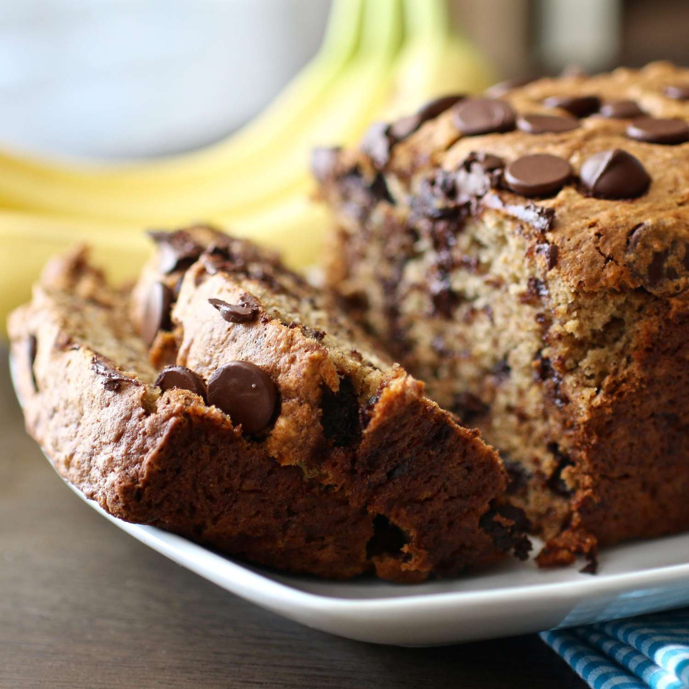

Making Banana Bread

Ingridients
- Flour: This chocolate chip banana bread starts with all purpose flower
- Bananas: You will need to smash 3 ripe bananas
- Eggs: Whole eggs keep banana bread moist
- Chocolate Chips: They can add a lot more flabor then just regular banana bread
How to Make
- Mix the dry ingredients in one bowl; the bananas, milk, and cinnamon in another bowl; and beat the butter and sugar in a third bowl, adding the eggs one at a time.
- Stir the banana mixture into the butter mixture. Mix in the flour mixture. Fold in the chocolate chips.
- Pour the batter into a prepared loaf pan and bake in the preheated oven until a toothpick comes out clean

Want more info? Check out the below links or get back to the home page
Click here
Official Website